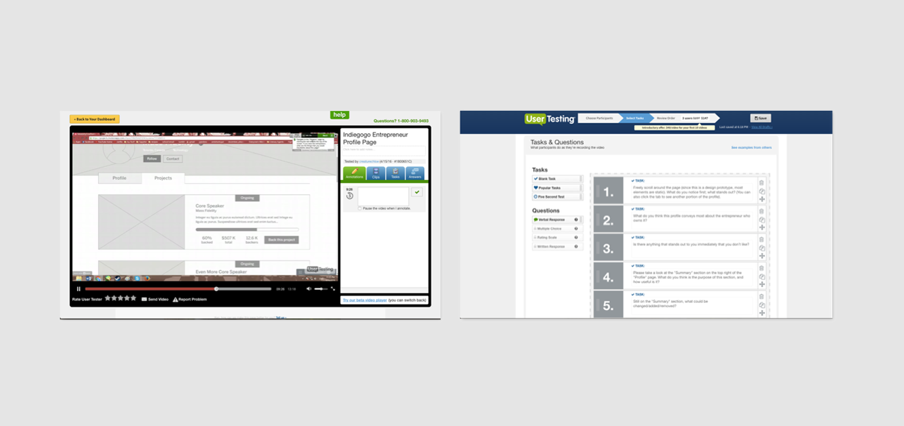

INDIEGOGO ENTREPRENEUR PROFILE
Through Berkeley Innovation in the Spring 2016 semester, I worked on a redesign of Indiegogo's entrepeneur profile. Indiegogo, one of the world's largest crowdfunding platforms, wanted to better tell the story of an entrepreneur's journey and to drive longer-term relationships between campaign backers and entrepreneurs through the redesigned profile. I worked with Julia Liang, Vanessa Ng, and Ken Chen on this project. We were mentored by Bianca Romulo.
MY ROLE
The project was separated into 4 major sprints – User Research, Ideation and Prototyping, User Testing and Iteration, and Hi-Fidelity Mockups and Presentation. The entire team worked during all sprints, and I served as the sprint leader for the final sprint, overseeing and contributing to high-fidelity mockups of the profile, as well as developing the presentation that was delivered to the client.
THE PROBLEM
The previous Indiegogo entrepreneur profile was extremely simple and did not provide adequate information about an entrepreneur's reliability or journey. By redesigning the profile, Indiegogo wanted to provide a better platform for an entrepreneur's journey and drive long-term relationships between campaign backers and entrepreneurs.
USER RESEARCH
We conducted interviews with college-aged people who had previously backed Indiegogo campaigns and entrepeneurs who ran successful campaigns on Indiegogo. Through conducting these interviews and sorting through observations and insights, we found that there were four main areas of concerns with the current entrepeneur profile: reliability, accessibility, entrepeneur activity, and personalization.
Additionally, from our user research, we developed two personas, one for a campaign backer, and another for an entrepreneur on Indiegogo. The full personas can be found here.
IDEATION AND PROTOTYPING
Focusing on how to improve upon reliability, accessibility, entrepreneur activity, and personalization, we began sketches for the profile.
USER TESTING
After digitizing our initial profile sketches in mid-fidelity wireframes, we reconnected with some of the entrepreneurs that we initially interviewed during user research to get feedback on the layout and features of the profile. To supplement, we ran unmoderated remote user testing on UserTesting.com.

From user testing, we gathered some valuable insights:
- Both campaign backers and entrepreneurs valued the quick stats at the top of all profiles - it was a quick way to display the entrepeneur's work and achievements.
- A challenge that we found was clarifying the reviews on the profiles, as people were confused as to whether reviews were for entrepreneurs or for specific projects. We wanted to prevent any type of harrassment in reviews for entrepreneurs, so we decided to restrict entrepreneur reviews to text-only with tags such as "responds quickly" or "delivers." In reviews for specific products, we allowed star ratings.
REFINEMENT AND HIGH FIDELITY MOCKUPS
After conducting user testing on mid-fidelity wireframes, we saw that the four focus points were converging into two main profiles – one entrepreneur-focused profile that communicated entrepreneur activity and reliability, and a product-focused profile that communicated personalization and the future of a marketplace on Indiegogo. For our high fidelity mockups, the visual design was guided by Indiegogo branding.
PRESENTATION
At the end of our project, we had the opportunity to present our work to Indiegogo's design team at its SF headquarters.
REFLECTIONS
Thinking back upon this project, there are some things I would want to improve.
1. I would want to conduct further user testing on higher fidelity mockups of the profile, or been clearer when testing with the mid-fidelity wireframes. Many testers were confused as to why they only saw "grey boxes" or were interacting with static pages, so I would have wanted to create working prototypes with visual design implemented to user test.
2. I would want to return to the challenge of defining what types of reviews we would have on the entrepreneur profile. While we wanted to prevent harrassment and spam in reviews, when thinking about it now, I would want people to be able to give honest reviews. If an entrepreneur really did not respond to inquirires from campaign backers, backers should be able to write those types of reviews and attach the corresponding tags to those reviews. Additionally, I would want to further hash out how people can validate others' reviews if they agree with them, in order to make sure that reviews are reliable.
Thanks for reading!